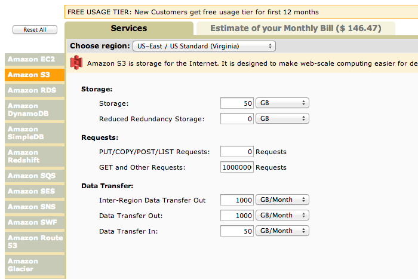

Most of today’s web applications depend on a backend API, that gets the request from the client, queries a database or a proxy cache, massages the data in the in a format that is queried for and returns it back to the client.
We spent a lot of time having our backend API and a proxy cache on Heroku, and with issues of Heroku’s routing and maintaing the both the backend services when we had to focus on building the client app, which was far more complicated, we came up with porting our API to S3. This was deduction because most of the queries we were making were documents that didn’t need massaging but were straight ids that were stored in our database. Moreso, we realized that we could work around deletes, and just focus on inserts and updates. Further, we realized we had a reduction in our costs as we ended up paying ~2000 USD because to Heroku because of a caching bug we oversaw. The gains, in storing raw static files in S3, which are JSON documents were:
[1] Don’t need to maintain a backend service
[2] Mostly having backend services that depend on logic, will at one point or another, have to either be redesigned for scaling
[3] Costs are way much lower with GET requests on S3. With not more than 10M requests, we don’t pay more than ~10 USD.
The only concern here is to have your DB in sync with the static files in S3. We have deployed a worker for updates and inserts, through a Node.JS worker that get pushes via a REDIS subscribe.
var buffer = new Buffer(JSON.stringify(image), "utf-8") var filename = '/sites/' + site_name + "/tagged_content/images/" + image.source_url_md5 + '.json' s3.putBuffer(filename, buffer, 'public-read', { 'Content-Type': "application/json; charset=utf-8" }, function(error, result) { if (error) { callback(err); } else{ callback(null); } });
Thanks to aws2js
Our own memcache, but with an ability to delete keys
Top level cost analysis
